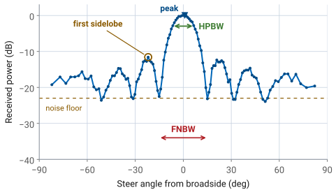
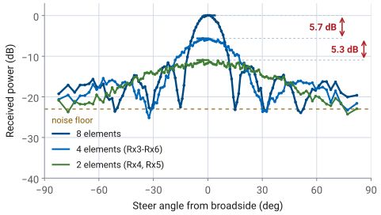
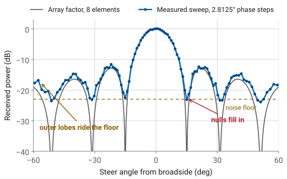

L20 Lab — Array Factor#
Array Factor
Halve the active aperture and watch the beam double.
L20 Lab · Antennas, Phased Arrays, and Radar Systems · Dr. Neil Rogers
Printing
To print the slides, switch to present mode and print: one slide a sheet, with room for notes. Print from read mode for the whole lesson.
Learning Objectives
- I can derive the array factor for an arbitrary linear array and apply pattern multiplication.
Halve the Aperture, Double the Beam
Sweep the beam past a fixed source at 8, 4, and 2 active elements.
You predict every number at your own Signal Freq before you measure it.
One kit, four sweeps, one L20 Lab packet.
Lesson 20 derived the beamwidth and sidelobe results this lab tests. Today they go to the bench. You sweep the array three times, shrinking the active aperture by half between sweeps, and read the half-power beamwidth, the first-null beamwidth, and the first sidelobe level off each trace. A fourth sweep leaves only the two end elements on, which tests the array factor on a configuration that is not a contiguous block. You compute the predictions before the period, at your own kit’s frequency, so the work at the bench is the third step: reconciling what the plot shows with what the array factor says. Most of the differences have a known cause. One of them, the size of the peak step between apertures, does not yet, and the lab records it as an open measurement.
Beamwidth Follows the Aperture
Halve the active aperture \(Nd\), and both beamwidths double.
Compute both at your own Signal Freq in Part 1.
Active |
\(Nd\) |
First SLL |
|---|---|---|
8 |
112 mm |
−12.8 dB |
4 |
56 mm |
−11.3 dB |
2 |
28 mm |
yours to find |
The PHASER is an 8-element linear array with element spacing \(d = 14\ \text{mm}\). This page works its numbers at 10.3 GHz as one example. There the wavelength is \(\lambda = 29.1\ \text{mm}\), so \(d/\lambda = 0.481\) and the full aperture is \(Nd = 112\ \text{mm}\), just under four wavelengths. Your HB100 runs at its own frequency, somewhere between 10.1 and 10.7 GHz, so your numbers will differ: you will press Find HB100 at the bench, record the Signal Freq it reports, and compute \(\lambda\), \(d/\lambda\), \(kd\), and every prediction at that frequency. The kit in the dry run read 10.408 GHz, where \(\lambda = 28.82\ \text{mm}\).
Two results from Lesson 20 set every number you are about to measure: the half-power beamwidth and the first-null beamwidth above. Both depend on the array only through \(Nd\), the active aperture. Turning off elements at the ends of the row shortens \(Nd\) without changing \(d\), and that is the whole experiment: halve the aperture, watch the beam double. The 0.886 rule carries a small-angle approximation, so check at each aperture whether the beam is narrow enough for it, and solve the array factor’s half-power point directly where it is not.
The table lists the three apertures you will sweep: 8 is E1 to E8, 4 is E3 to E6, and 2 is E4 and E5. The beamwidth columns on Part 1 of the packet are yours to compute at your own frequency. Note that the sidelobe entries are not the same number. The familiar −13 dB figure is the large-\(N\) limit of the uniform array factor. An 8-element array lands at −12.8 dB, close enough to call −13 dB, but a 4-element array reaches only −11.3 dB. The two-element entry is yours to work out from its array factor.
Beamwidth is set by the active aperture \(Nd\), not by the element count on its own. Halving the number of active elements halves \(Nd\) and doubles both beamwidths. The sidelobe level is set by the shape of the amplitude distribution, which stays uniform throughout this lab, so the sidelobe moves only through the small-\(N\) correction.
Two Entries That Need Care
At \(N = 2\), check the 0.886 rule’s small-angle step before using it.
Find the first null, \(\psi = \pi\), and check whether it lands at a real angle.
Two entries in the table need care before you go to the bench, and both are in the two-element row. The \(0.886\ \lambda/(Nd)\) rule carries a small-angle step inside it, and the wider the beam, the worse that step gets. Decide whether a two-element beam is narrow enough for it. For two elements the array factor is just \(\cos(\psi/2)\) with \(\psi = kd\sin\theta\), so you can also solve its half-power point directly at your own Signal Freq.
The first-null beamwidth and the first sidelobe come from the same function. The first null of \(\cos(\psi/2)\) needs \(\psi = \pi\), which is \(\sin\theta = \lambda/2d\). Evaluate that at your own Signal Freq and decide whether a real angle satisfies it. Part 1 of the packet asks you to explain what you entered for the two-element FNBW and first sidelobe, and why.
Two Elements, Far Apart
E1 and E8: the same two-element array factor, seven times the spacing.
In Part 1, predict every full-height lobe and the main-lobe width.
The fourth sweep leaves only E1 and E8 on. It is still a two-element array, so its array factor is the same \(\cos(\psi/2)\) as the E4 and E5 pair, with the spacing \(D = 98\ \text{mm}\) in place of \(d\). That one change tests the derivation on an array that is not a contiguous block, which is what “an arbitrary linear array” in the objective asks for. Work out where \(\psi = 2\pi m\) lands in visible space, and how wide the lobe at 0° is, before you sweep. Compare both with the E4 and E5 row: the two pairs add the same two voltages, so their peaks should agree, and their beams should not. Lesson 23 names what you will see.
Reading a Sweep for What It Is
Sampled: 162 points, one 2.8125° phase step apart, about 0.9° of angle near broadside.
A floor about 23 dB below the 8-element peak.
Nulls read the floor, about −23 dBc of their trace’s peak, not \(-\infty\).

The Rectangular tab does not plot the array factor. It plots received power against commanded steer angle: the software steps the beam past a stationary source and records the power at each step. By reciprocity that traces the array pattern, but three properties of the measurement are baked into every trace you will read.
The sweep is sampled, not continuous. With Use Bits on, as in every lab preset, the software steps the element-to-element phase one ADAR1000 LSB, 2.8125°, per point. One step moves \(\sin\theta\) by \(2.8125^\circ/173.2^\circ = 0.0162\) at 10.3 GHz, which is 0.93° of angle at broadside and 1.32° at 45°, widening as \(1/\cos\theta\). A sweep is 162 points: 123 of them span ±82°, and the other 39 ask for more phase than any real angle needs and plot at ±90°. A feature narrower than one step can fall between samples entirely. The trace has a floor. With all eight elements on, the trace stops following the array factor about 23 dB below the peak of the uniform beam, and anything the array factor puts below that line reads as the floor instead. The floor is not one fixed level for every trace. In the dry run the four-element nulls filled to about −23 dBc of their own, lower peak, while the two-element trace fell about 27 dB from its peak toward the edges of the scan. And the nulls are the first casualties of both effects together: a true null is infinitely deep and infinitely narrow, so the grid usually misses its bottom, and even a sample that lands on it reads the floor.
Ideal Versus Measured
The widget below draws the array factor for each of the three apertures, then adds those three measurement effects on a toggle. Set the aperture, read HPBW, FNBW, and first sidelobe level off the ideal curve, then switch measurement effects on and read the same three numbers again from the sampled trace. The eight-element FNBW pill holds when the grid appears, because the null sits exactly 16 phase steps out and a sample lands on it. The HPBW pill is the one that moves, and it moves more as the aperture shrinks. The widget holds its floor 23 dB below the eight-element peak at every aperture, which leaves its two-element peak only about 11 dB above the floor. The dry-run kit’s two-element trace sat about 27 dB above its floor, so read the widget’s smaller apertures for how the grid and a floor act on a pattern, not as a forecast of your bench readings.
Equipment and Setup
The kit on its stand, calibrated; the HB100 at boresight, 1 m out, at patch-row height.
Signal Freq from Find HB100; Rx Gain set for a −10 dBFS FFT peak.
2 Array Factor under Lab Presets.
Per bench:
ADALM-PHASER (CN0566) with its ADALM-Pluto, on its stand, with its 5 V supply and network connection.
HB100 Doppler module with a fresh battery, on a tripod.
A laptop with a browser pointed at
http://phaser.local:8080.
Place the HB100 at boresight, about 1 m from the face of the array, at the same height as the patch row and with its face square to the array. Boresight placement matters more than distance in this lab: every prediction is a broadside number, and a source offset by a few degrees shifts the whole trace along the angle axis.
Bring Up the Kit
Browse to your kit’s address from Lesson 17 and wait for the pill to read Connected.
With the HB100 at boresight, press Find HB100 and record the Signal Freq it reports in Part 2 of the packet.
Press Calibrate and wait for it to finish, with the HB100 still at boresight.
Press 2 Array Factor under Lab Presets. Expand the section first; its buttons respond only while it is open.
Set Rx Gain (dB) for an FFT peak of \(-10 \pm 3\) dBFS; record it.
Press Start. On the Rectangular tab, confirm a broadside sweep peaks near 0° with a clean pair of first sidelobes.
Calibrate reads the frequency that Find HB100 stores, which is why Find HB100 comes before it. Your calculated columns use the same frequency: if you filled them in before the period at a frequency more than 50 MHz from the one Find HB100 reports now, recompute them before you sweep. A change smaller than that moves no prediction in the table by more than about 0.3°.
Step 5 is the L17 Lab’s level reference, not a fixed gain. The preset does not set Rx Gain (dB), and the gain that reaches −10 dBFS depends on your source, its battery, and its distance. In the dry run, 10 dB drove the peak over full scale at 1 m, and the L20 sweeps ran at 1 dB with the source about 1.2 m out. A main lobe with a flat top on the Rectangular tab means the receiver has clipped: turn the gain down. Leave the gain where Step 5 set it for all four sweeps, so the peaks compare against each other.
Calibrate starts the per-element gains and phases from a matched state. An uncalibrated array has amplitude and phase errors spread across the row, which fills the nulls and raises the sidelobes on its own, and you would then be measuring the calibration rather than the array factor. If the broadside sweep does not look right, fix that before going further, because everything below assumes a calibrated array.
The preset sets a uniform taper across all eight elements, zero steering phase, and Use Bits on, so the sweep steps one 2.8125° phase LSB per point, and it opens the Rectangular tab in the beam-sweep plot. From here the procedure names only the controls you change.
Note
The HB100 is a free-running DRO and drifts across 10.1 to 10.7 GHz with temperature. The GUI hunts for the tone, so a drift of tens of megahertz between sweeps does not affect this lab. Moving the source does, because all four traces are compared against each other at the end.
Procedure: Steps A1 to A4
Each step names the control you touch and the observation you should get. Fill Tables A and B in Part 2 of the packet as you go, and predict before you measure at every aperture change.
Step A1 - Sweep the full array. With all eight Element Gains at 100, press Start. The sweep runs across ±90° and settles into a trace with a single main lobe at 0° and three or four sidelobe pairs on each side. Press Freeze to hold it as a reference trace. Read the Peak Gain readout and record it. Hover along the trace to read the angles where it falls 3 dB below the peak, and record the difference as the measured HPBW. Expect it within a degree of your calculated value. Then find the two minima that bracket the main lobe and record the difference as FNBW, and compare it with your calculated value. Finally read the height of the tallest sidelobe relative to the peak, near ±22°, and record it as the first SLL. Expect −11 to −14 dBc.
Step A2 - Halve the aperture. In Element Gains, set E1, E2, E7, and E8 to 0, leaving E3 through E6 at 100. Before pressing anything, check your calculated row for four active elements over 56 mm of aperture. The voltage sum puts the peak 6.0 dB below the eight-element peak; expect the bench to read about \(5 \pm 1\ \text{dB}\). Press Start, then Freeze. Read the same four numbers. The main lobe is now roughly twice as wide and the sidelobe structure has thinned out to one pair near ±50°. A null that fills to the floor reads wide: in the dry run one of the four-element nulls filled to about −23 dBc and the FNBW read about 5° wider than the array factor gives.
Step A3 - Halve it again. Set every element to 0 except E4 and E5. Check your calculated two-element row first. The voltage sum puts the peak 12.0 dB below the eight-element peak; expect the bench to read about \(10 \pm 2\ \text{dB}\). Press Start, then Freeze, and read the same four numbers. The trace falls about 27 dB toward ±80°, which is the two-element array factor’s own roll-off toward endfire, not a fault.
Step A4 - Spread the pair. Set E4 and E5 to 0 and E1 and E8 to 100, so only the end elements are on. Check your Part 1 Question 3 first. Press Start, then Freeze. Read the peak, the half-power width and the first-null width of the lobe at 0°, and the angle and level of every full-height lobe, into Table B.
Procedure: Steps A5 and A6
Step A5 - Compare the frozen traces. The three uniform apertures are on the plot together now. Two trends should be visible without measuring anything. The beamwidth doubles at each halving, because \(Nd\) halves and both beamwidth formulas scale as \(1/Nd\). This is the measurement to trust, and it is the one the packet grades. The peak steps down at each halving, because the elements add in voltage at boresight: eight equal signals in phase give eight times the voltage of one, four give four times, and the ideal steps are
The bench reads less than that. Expect about \(5 \pm 1\ \text{dB}\) per halving: the dry-run kit read 5.1 and 4.8 dB. Record both of your steps from the Peak Gain readings; Part 3 of the packet asks about the difference.
Step A6 - Restore the array. Set all eight Element Gains back to 100, so the next lab starts from a full uniform aperture.
What the Three Traces Show
Each halving doubles the beam because \(Nd\) halves. The lab grades this.
The voltage sum predicts a 6.0 dB peak step per halving.
The dry-run kit read 5.1 and 4.8 dB. The cause is still open.

The figure draws the ideal array factor for each aperture at 10.408 GHz, the Signal Freq of the kit in the October 2026 dry run, and marks the three peaks that kit measured. The beam doubles at each halving as Lesson 20 predicts, and the eight- and four-element beamwidths the kit measured land within half a degree of the curves. The peaks do not. The voltage sum predicts steps of 6.0 and 6.0 dB; the kit read 5.1 and 4.8 dB, 9.9 dB in all against 12.0. Expect about \(5 \pm 1\ \text{dB}\) per halving on your own kit.
The cause of that shortfall is not yet known. Two explanations were tested on the dry-run kit and ruled out. Signal leaking through the elements set to 0 accounts for at most 0.5 dB: with all eight gains at 0 the peak fell 33.5 dB below the full array. Receiver compression is ruled out too: lowering every element gain from 100 to 50 lowered the signal, and the shortfall grew, where compression would have made it shrink. The remaining candidates are still being measured, and Part 3 of the packet asks you to propose one with a test that would check it.
None of this touches the shape measurements. HPBW, FNBW, and sidelobe level are all read relative to each trace’s own peak, so an error in the peak level does not move them. The dry-run kit’s eight- and four-element beamwidths landed within half a degree of the array factor at its own 10.408 GHz; its sidelobes and peak steps:
Active |
First SLL meas / pred |
Peak step meas / ideal |
|---|---|---|
8 (E1 to E8) |
−12.5 to −14.0 / −12.8 dB |
reference |
4 (E3 to E6) |
−12 to −14 / −11.3 dB |
−5.1 / −6.0 dB |
2 (E4, E5) |
Part 1 |
−9.9 / −12.0 dB |
The two-element HPBW is the one shape entry that does not agree. The dry-run kit read it about 6° narrower than the array factor, with a spread of about ±3°, so record it with its spread rather than as a match.
Where the Sweep Leaves the Array Factor
Feature |
Array factor |
Sweep reads |
|---|---|---|
Floor |
none |
about −23 dBc |
Nulls |
\(-\infty\) |
\(\approx -23\) dBc, the floor |
FNBW |
from the nulls |
up to one step (\(\approx 1^\circ\)) wider |
First SLL |
−12.8 dB |
−11 to −14 dBc |
Three differences between your trace and the array factor are expected, and each one has a number attached to it.
The floor sits at about −23 dBc. The trace stops following the array factor about 23 dB below its own peak. Every feature of the array factor below that line — the deep parts of the nulls, and every sidelobe of a tapered array — reads as noise instead of as pattern. This is the usable dynamic range of the measurement, and it is why the lab asks for the first sidelobe rather than the second or third.
Nulls read about −23 dBc instead of \(-\infty\). Two effects fill them, and it is worth keeping them separate. Grid straddle is the smaller one. The 8-element null sits at a phase step of \(360^\circ/8 = 45^\circ\), exactly 16 LSBs, so with the source on boresight a sample lands on it. A source half a step off boresight, 0.47°, leaves the nearest sample at −30 dB, still below the floor. The floor is what fills the null: it adds its own power to every sample near it. Reading each null at its lowest sample puts the measured FNBW up to one step, about 1°, wider than the array factor’s value. The dry-run kit’s eight-element FNBW matched the array factor to within 0.1°.
The first sidelobe reads −11 to −14 dBc. The array factor puts it at −12.8 dB and 21.9°, a phase step of 64.7°. The sample at 23 LSBs, 64.69°, catches it within a hundredth of a decibel, so grid straddle costs nothing here, but the floor adds power to a sidelobe that is only 10 dB above it and noise moves the reading a few tenths either way from sweep to sweep. The two first sidelobes need not match each other either: the dry-run kit read −12.5 dBc on one side and −14.0 dBc on the other. A single number is not meaningful at this dynamic range; a range is.
The half-power readings get less certain as the aperture shrinks. At eight and four elements the dry-run kit’s HPBW landed within half a degree of the array factor. At two elements it read about 6° narrower, with a spread of about ±3°. The two-element pattern is flat near its half-power points: at 10.408 GHz it falls only about 0.2 dB per degree there, against about 1 dB per degree for eight elements. An error of 0.6 dB in the level you read the −3 dB crossings against moves each crossing about 3°, and the HPBW twice that. Report the two-element HPBW with its spread, and expect agreement within several degrees, not within one.

Worked Example: A Six-Element Aperture
Worked example — predicting a six-element aperture
Suppose you turn off only E1 and E8, leaving six elements over \(Nd = 6 \times 14 = 84\ \text{mm}\). Work it at 10.3 GHz, where \(\lambda = 29.1\ \text{mm}\); at the bench you would use your own Signal Freq. The 0.886 rule gives
and the first-null beamwidth is \(2\arcsin(29.1/84) = 2 \times 20.27^\circ = 40.5^\circ\). Solving the six-element array factor directly gives 17.9° for the HPBW. The voltage sum puts the peak \(20\log_{10}(6/8) = -2.5\ \text{dB}\) below the eight-element peak, and the bench will most likely read a smaller drop, as in Step A4. The predicted HPBW spans about 19 sweep steps, so the measurement has enough resolution to confirm it, and you should expect a reading within a degree or two of 17.9°.
No Hardware?
Note
Run python phaser_headless.py --sim and open the same URL. The lab reproduces
step for step in simulation, because the simulated source already sits at
boresight and nothing in the procedure requires moving it. Its Signal Freq is
10.525 GHz, so compute the calculated columns there. It adds the element signals exactly in voltage, so its peak steps
come out at the ideal 6.0 dB rather than the bench’s 5 dB,
and it does not model Rx Gain (dB). Record those as your measured column
and reconcile them against the calculated column exactly as you would on the
bench.
Lab Packet
The L20 Lab packet is one submission for the whole lab, turned in complete before Lesson 21. It replaces the old lab sheet and the L20 Lab problem set. It has three parts:
Part 1, Pre-Lab (individual, before the lab period, because you need it at the bench): your kit’s frequency, the prediction table for the three uniform apertures, the array factor and lobe angles for E1 and E8, and a rehearsal of the E1 and E8 sweep on the hosted simulator.
Part 2, Measurements (your own kit’s data, recorded in class): Table A, one row per sweep, and Table B, the E1 and E8 lobes.
Part 3, Writeup (individual, after the lab): reconcile the measurements with the predictions, and three analysis problems.
Summary: The Array Factor on the Bench
Symbol / idea |
What it is |
Number to remember |
|---|---|---|
\(Nd\) |
active aperture; sets both beamwidths |
112 mm at \(N = 8\), \(d = 14\ \text{mm}\) |
\(\theta_{\text{HP}} \approx 0.886\ \lambda/Nd\) |
half-power beamwidth, broadside |
compute at your Signal Freq; check the small-angle step at each aperture |
\(\text{FNBW} = 2\arcsin(\lambda/Nd)\) |
first-null beamwidth |
compute at your Signal Freq; a null needs a real angle |
First SLL, uniform |
set by distribution shape, not size |
−12.8 dB at \(N = 8\), −11.3 dB at \(N = 4\); measured −11 to −14 dBc |
Two elements \(D\) apart |
span sets the lobe width; \(D > \lambda\) repeats the lobe |
compute for E1 and E8 in Part 1 |
\(20\log_{10}(N_{\text{active}}/8)\) |
ideal peak drop from the coherent voltage sum |
−6.0 dB per halving; the bench reads about \(5 \pm 1\) dB, cause open |
Sweep grid |
one ADAR1000 phase LSB per point |
2.8125° of phase, 0.93° of angle at broadside at 10.3 GHz; 162 points |
Dynamic range |
a trace’s peak above its floor |
\(\approx 23\) dB; nulls read the floor, \(\approx -23\) dBc |
Looking Ahead
Today’s traces are the array factor, read against a commanded angle.
Lesson 21 adds the element pattern: what the patches do to the beam.
The L21 Lab holds the beam still and walks the source around it.
Every trace you took today plots received power against the angle you asked the beamformer for, with the source fixed, so the element pattern contributed the same constant to every point and dropped out of the shape. Lesson 21 puts it back: the patches have their own pattern, and the array radiates the element pattern times the array factor. Keep your three frozen traces. The L21 Lab measures the full pattern by moving the source instead of the beam, and the far edges of today’s eight-element trace are where the two part company.